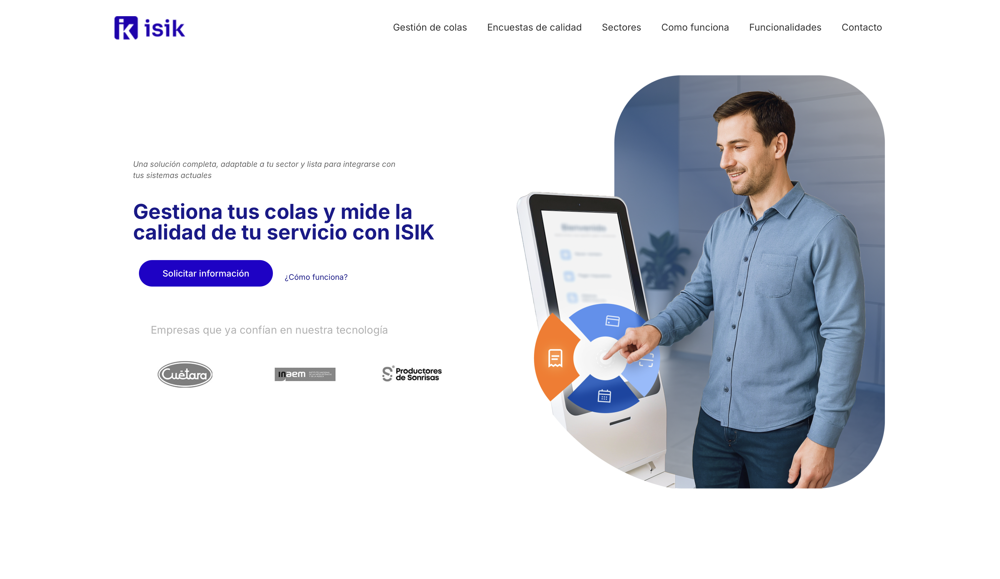
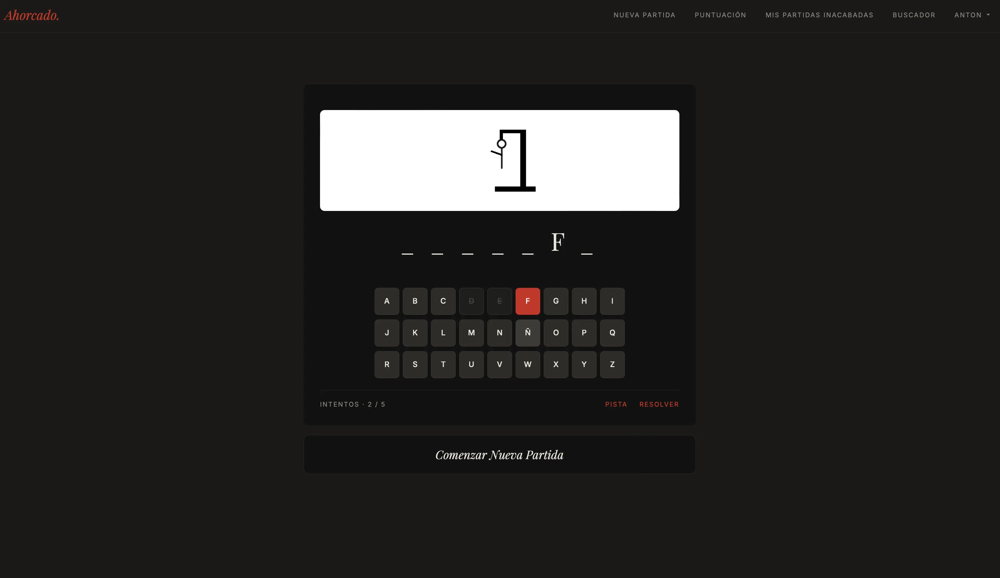
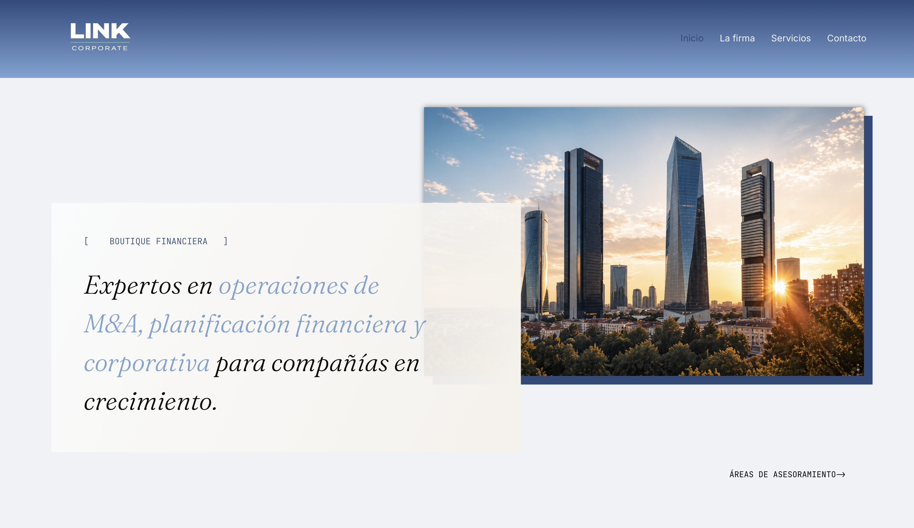
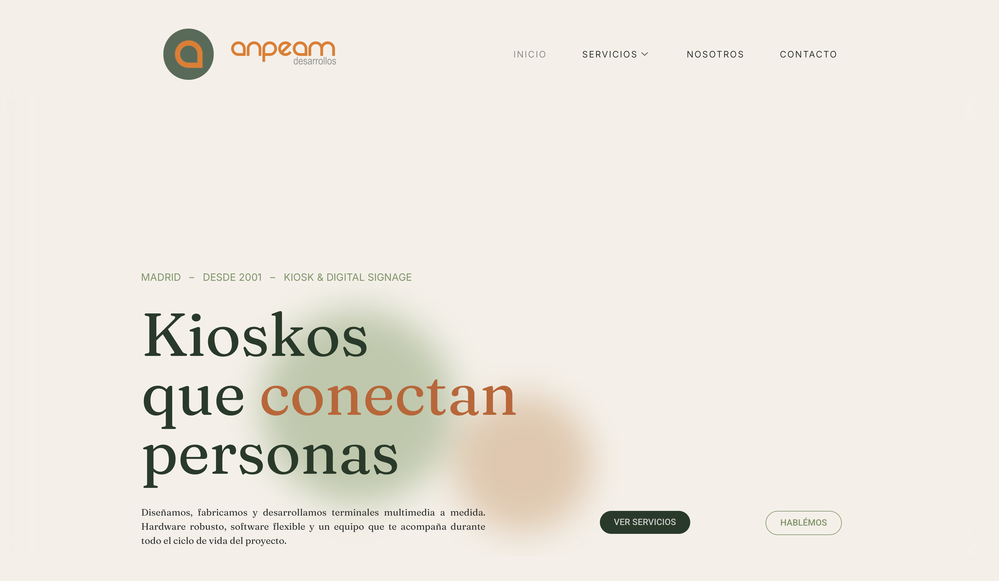

- Caso de estudio
- PHP
- JavaScript
- WebRTC
ISIK
Plataforma modular para quioscos de ticketing: pagos con tarjeta, recepción por videollamada e impresión de tickets.
Ver la web de ISIKProyectos reales y conceptuales, contados con su proceso: el problema, las decisiones y lo que aprendí.

Plataforma modular para quioscos de ticketing: pagos con tarjeta, recepción por videollamada e impresión de tickets.
Ver la web de ISIK
El juego de siempre, construido con PHP orientado a objetos, PDO y AJAX.
Ver caso de estudioDurante mis prácticas desarrollé tres webs para clientes reales. Están creadas con WordPress, Elementor y CSS.
El cliente se especializa en la personalización de software desarrollado para totems tipo quiosco.
Ver caso de estudio
El cliente es una boutique financiera especialista en operaciones de inversión y capitalización.
Ver caso de estudio
El cliente ofrece servicios de diseño y desarrolo de terminales multimedia y software personalizados.
Ver casos de estudio